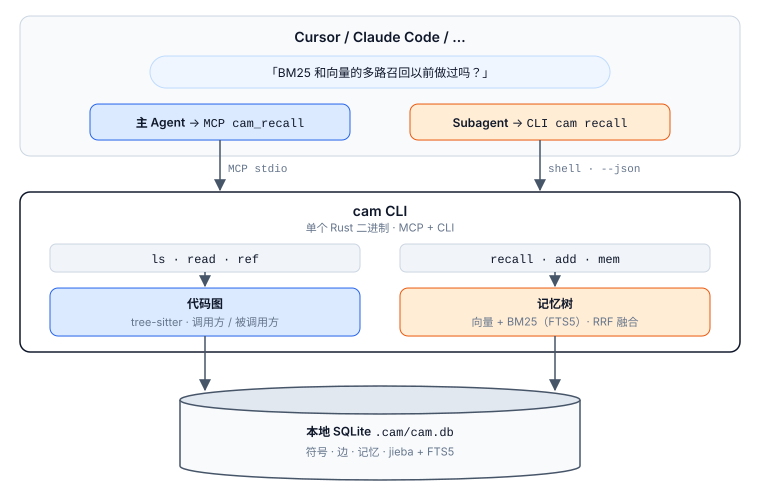

终结全文件倾倒与跨会话失忆。代码图符号级精准切片，混合检索融合向量与 BM25，艾宾浩斯抗遗忘沉淀原子事实。为 Coding Agent 减少最高 98% 上下文 Token。
同一个本地 Rust 二进制内提供两个检索平面。点击下方 Tab 亲自操作虚拟文件系统与混合召回打分器。
src/main.rs 指向文件大纲，src/main.rs/main 直接精准指向函数实现，无需读取全文件。
pub fn main() -> Result<()> {
let cli = Cli::parse();
let project_root = resolve_project_root(&cli.project)?;
match cli.command {
Commands::Mcp => run_mcp_server(project_root),
Commands::Recall(args) => run_recall(&project_root, args),
Commands::Read(args) => run_surgical_read(&project_root, args),
Commands::Ref(args) => run_ref_graph(&project_root, args),
Commands::Index => rebuild_code_graph(&project_root),
Commands::Sync => incremental_sync(&project_root),
}
}无论是 Cursor、Claude Code 还是轻量 Subagent，执行任何编码任务均遵循无损记忆闭环。
探索代码前，把问题翻译成一句英文调用 cam_recall。若命中历史已沉淀方案且为 latest，直接复用，杜绝重复排查。
若提示 not_indexed，在项目根执行一次 cam index，tree-sitter 将自动解析函数、结构体、类与一跳调用边。
记忆未命中时，通过 ls 或 find 锁定符号，使用 read 获取该符号切片，用 ref 追溯调用链路。
问题解决后，提取原子事实通过 add 记录关键方案（一记忆一事实）。相关事实用 --link 织成知识图谱。
主 Agent 通过 MCP stdio 调用工具；无法继承 MCP 的 Subagent 直接在终端跑 CLI。两者共享本地 .cam/cam.db，彻底解决多智能体协作断层。

不妥协的工程质量，将代码拓扑理解与长效会话记忆压缩进 10MB 单一本地二进制。
零外部 API Key，零代码外泄风险。嵌入模型（model2vec）在本地推理，代码图与记忆全部保存在项目内部的 SQLite（.cam/cam.db）。
告别 3000 行文件的整篇倾倒。src/main.rs/main 直接指向该函数切片；cam ref symbol --dir in|out 秒查一跳上下游。在 DeepSeek 代码评测中减少 98% Token 消耗。
一条记忆严格存储一条原子事实，避免单条记忆信息过载。多个事实之间用 --link 建立知识图谱边，--parent 建立结构层级，--supersedes 建立线性修订版本链。
基于艾宾浩斯记忆模型计算保留率 \(R = e^{-t / S}\)，温和调节召回打分（幅度 \(\le 10\%\)）。每次真实命中强化稳定性（\(S \times 1.7\)）。记忆从不硬删除，过期条目标记为 needs_update。
大多数宿主（Cursor Task/explore、Claude Code Bash）不会把 MCP 工具传递给委派子进程。cam 提供主 Agent 专属 MCP 工具与 Subagent 专属 cam --json 命令行，打破智能体协作壁垒。
cam sync 基于内容哈希仅增量重建改动文件。cam watch 在后台监听源码变动，保存文件即自动增量同步代码图。
代码图与记忆树在相同权威语料上与开源最顶尖系统实测对照。
原生支持 Cursor、Claude Code、Windsurf、Codex、VS Code Copilot 与 JetBrains。
{
"mcpServers": {
"cam": {
"command": "cam",
"args": ["mcp"]
}
}
}Subagent (Task / explore) 无法继承 MCP，在终端中直接执行：
cam --json --project /path/to/repo <command>Task / explore 或 Claude Code 的 Bash 子会话）时，绝大多数宿主不会把 MCP 工具挂载给子进程。很多基于纯 MCP 的方案在子任务中立刻失灵。cam 采用双接口设计：主 Agent 调 MCP，Subagent 执行 cam --json，两者读写相同的 .cam/cam.db，保证全链路能力无死角。
potion-multilingual-128M）在初次联网时缓存至 ~/.cam/models/；在纯内网或断网无模型环境中，cam 会自动平滑回退到词面 hash embedder，并结合原生 BM25 分词继续提供极高精度的混合检索，无需连外网。
src/main.rs，使用 cam read src/main.rs 仅返回该文件的符号大纲；而 src/main.rs/main 则是该文件内名为 main 的符号本身，只读取该函数的代码切片。这让 Agent 能像翻阅目录一样浏览代码，避免在上下文中加载大量无关实现。